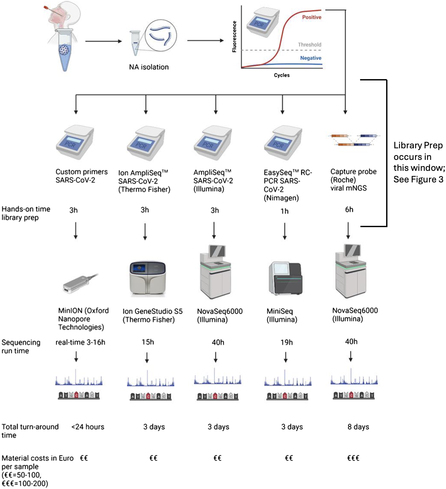
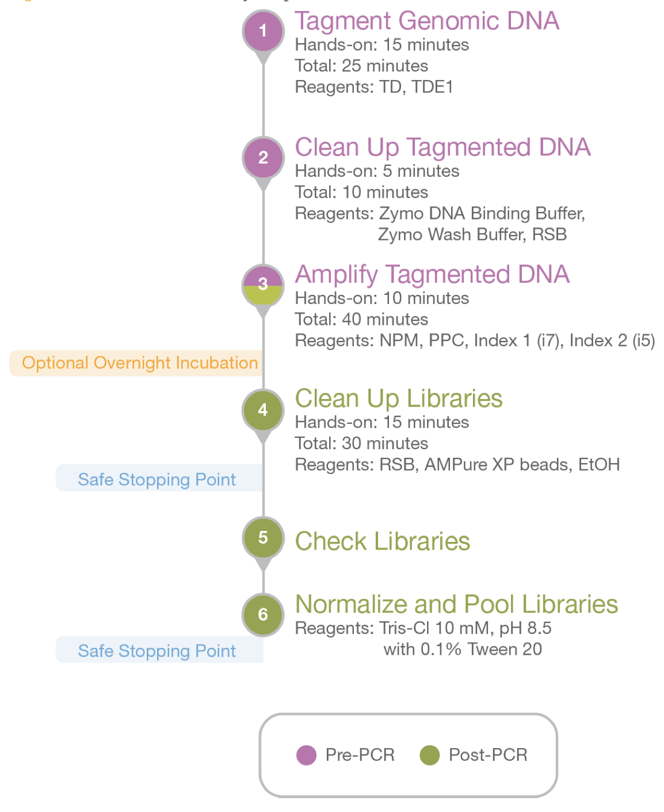

library(word2vec)
# using british national corpus http://vectors.nlpl.eu/repository/
model <- read.word2vec("/path_to_folder/British_National_Corpus_Vector_size_300_skipgram/model.bin", normalize = TRUE) head(summary(model, type = "vocabulary"), n = 100)
Word_embeddings <- predict(model,newdata = c("king_NOUN","man_NOUN","woman_NOUN","queen_NOUN"),type="embedding")An Exploration of Information Loss in Transformer Embedding Spaces for Enhancing Predictive AI in Genomics
Daniel Hintz
2024-06-06
Outline (1)
- Background
- SARS-COV-2
- DNA
- Coding regions and Proteins
- Sequence Representations
- GenSLM
- Data and Processing
- Data Description
- Data Cleaning & Pre-Processing
- Exploratory Data Analysis
- Generating Embeddings
- Methodology
Background
SARS-COV-2
DNA
- Deoxyribonucleic acid (DNA) is a molecule that contains the genetic code that provides the instructions for building and maintaining life.
- The structure of DNA can be thought of as rungs on a ladder (known as base pairs) involving the pairing of four nucleotides - Adenine (A), Cytosine (C),Guanine (G) and Thymine (T).
- Genomic sequencing is a process used to decipher the genetic material found in an organism
- For reference, the SARS-CoV2 virus is approximately 30,0000 base pairs (bp’s), whereas the human genome is approximately 3 billion bp.

DNA Sequencing Technology
- The two main technologies for DNA Sequencing is Ilumina and Nanopore
- Big Picture, the workflow for sequencing is the same for each technology:
- Someone gets tested for Covid, PCA is ran to detect if the assay is indeed positive
- Positive tests are ran though Library prep workflow before going onto a sequencing protocol within a lab
- This takes in the Covid Assay and arrives at a digital copy of DNA sequences

DNA Library Prep Workflow
- Library prep contains many steps, with lab technicians performing tasks to prepare the assay
- Library prep comes with the possibility of human error, in addition to the natural machine error in sequencing.
- Often between steps in the Library prep, the assay can diminish in quality without there being a clear reason as to why this happened.
- Post-sequencing, median genome coverage rates for SARS-CoV-2 can range from 81.6 to 99.8% [2].
- A genome coverage of 99.8% means that the sequencing process has successfully captured and sequenced 99.8% of the entire genome of the virus.

Coding regions and Proteins
- The coding region specifically encodes proteins that are essential for all the functions necessary for life.
- the whole SARS-CoV2 genome, marking structural and nonstructural proteins within the coding region along with the first 43 nucleotides for the nsp1 protein

Word Embeddings (1)
- Before we introduce GenSLM and embeddings for Sequences, what is an embedding and why would ever embed something?
- If we consider English text, how might we ever measure the similarity of words in terms of their meaning, said differently, How can we measure semantic similarity between words
- For example, what is the semantic difference between the words “King” and “Woman”
- This initially sounds outlandish, but if there were a way to represent words as numeric vectors, then we would be able to use the same linear algebra we would use to compare vectors of force, speed or velocity.
Word Embeddings (2)
- Here is where neural network embedding algorithms enters
- For example, given a corpus (a massive training set of structured text) how are the words “King”, “Quen”, “Man”, “Woman” related within the given corpus
- It turns out given a sufficiently large corpus of text you can train an embedding algorithm (such as word2vec for NLP) to generate vectors for words included within the corpus
Word Embeddings (3)

Sequence Representations
- An effective representation (embedding) of a genomic sequence is crucial for all downstream tasks
- i.e., clustering, classification, regression, protein function identification, structural analysis, and predicting genetic disorders [5]
GenSLM
Data and Processing
Data Description
Data Cleaning & Pre-Processing
Exploratory Data Analysis
Generating Embeddings
Methodology
What is the Difference Between Vectorization and Iteration?
- If y = 4x + 3, what is y for x = 4?
- If \(N_{(t + 1)} = N_{t}e^{r\left(1 ~-~ \frac{N_{t}}{K}\right)}\), what is \(N\) for \(t = 4\) \(~~\)(\(N_{1} = 2\), \(r = 0.5\), and \(K = 30\))?
Now for the Math in R
Now Onto a More Complex for Loop
- For people that write their own algorithms,
whileloops are a good skill to know1
Now for apply Functions
apply Functions (cont’d)
- You might want to look at the
pbapplypackage if you regularly parallelize your code.
Logical Statements (1)
Logical Statements (2)
Lets Try Some Exercises
Q1
Q2
Q3
Q4
Make a column in the data created below (a subset of the weather station data) for week. When X (this is the row ID or day of the month) is 1-7, Week should be 1; when X (day) is 8-14, Week should be 2; when X (day) is 15-21, Week should be 3; when X (day) is 22-28, Week should be 4; and for X (day) from 28-30, Week should be assigned a value of NA.
R Function Basics
Function Structure
Functions are like a grammatically correct sentences; they require arguments, a body, and an environment1.

Lets Write Some Functions
Functions need an object call (i.e. x or a return(x)) in order to return output from x to the global environment
R Function’s Extended
Function formals(), body() and environment()
More on Environments
- Environments are important to understand as they relate to Lexical scoping
Lexical Scoping

Default Argument Assignment
NULL Conditional Execution (1)
message(), warning(), and stop()
NULL Conditional Execution (2)
Conditional Execution with missing()
... dot-dot-dot (1)
- The `
...` argument is also known as an Ellipsis or simply dot-dot-dot.
... dot-dot-dot (2)
`...` has pros and cons, for more info see here
... dot-dot-dot (3)
So why does f5 work?
Anonymous Functions
“An Anonymous Function (also known as a lambda expression) is a function definition that is not bound to an identifier. That is, it is a function that is created and used, but never assigned to a variable” (see link)
base R anonymous function syntax:
purrr’s anonymous function syntax:
Functional Programming with base R
Functional Programming with base R
| Function | Description |
|---|---|
apply(X, MARGIN, FUN, ...) |
Applies a function over the margins (rows or columns) of an array or matrix. |
sapply(X, FUN, ...) |
Simplifies the result of lapply() by attempting to reduce the result to a vector, matrix, or higher-dimensional array. |
vapply(X, FUN, FUN.VALUE) |
Similar to sapply(), but with a specified type of return value, making it safer and faster by avoiding unexpected type coercion. |
lapply(X, FUN, ...) |
Applies a function to each element of a list or vector and returns a list. |
tapply(X, INDEX, FUN = NULL) |
Applies a function over subsets of a vector, array, or data frame, split by the levels of a factor or list of factors |
do.call(what, args, ...) |
constructs and executes a function call from a name or a function and a list of arguments to be passed to it |
mapply(FUN, ...) |
A multivariate version of sapply(), applies a function to the 1st elements of each argument, then the 2nd elements of each argument, and so on. |
Map(f, ...) |
Similar to mapply() but always returns a list, regardless of the output type. |
Reduce(f, x, init, ...) |
Applies a function successively to elements of a vector from left to right so as to reduce the vector to a single value. |
base R Examples (1)
base R Examples (2)
Functional Programming with purrr
Functional Programming with purrr
| Function | Description |
|---|---|
map(.x, .f, ...) |
Applies a function to each element of a list or vector and returns a list. Useful for operations on list elements. |
map2(.x, .y, .f, ...) |
Applies a function to the corresponding elements of two vectors/lists, useful for element-wise operations on two inputs. |
pmap(.l, .f, ...) |
Applies a function to each element of a list or vector in parallel, taking multiple arguments from parallel lists or vectors. |
reduce(.x, .f, ..., .init, .) |
Reduces a list or vector to a single value by iteratively applying a function that takes two arguments. |
_dbl, _int _chr, _lgl and _vec |
map, map2 and pmap variants to change output type, e.g., map_dbl, map_int, map_chr, map_lgl, map_vec, map2_dbl ... |
purrr Examples
Parallel Computing
Parallel Computing with furrr
A Note on Parallel Computing
Parallel Computing is not a magic bullet. Performance depends on Overhead of Parallelization, Task Granularity, and whether or not the task is sequential
- Sequential Tasks, generally speaking, are not capable of being parallized, though they can be “functionally parallized”; meaning given a function,
seq_func, the internals ofseq_funccannot not be parallized, but the call toseq_funccan be parallized. - We will illustrate this concept with Random Walks
Random Walks
expand for random_walk() source code
library(furrr)
library(tictoc)
nworkers = parallel::detectCores() - 1 # select nworkers to amount of cores - 1
random_walk <- function(steps) {
position <- numeric(steps) # Initialize the position vector
position[1] <- 0 # Start at the origin
for (i in 2:steps) { # Simulate each step of the walk
if (runif(1) < 0.5) {
position[i] <- position[i - 1] + 1 # Move forward
} else {
position[i] <- position[i - 1] - 1 # Move backward
}
}
return(position)
}steps = 10000; n_random_walks = 300 # Define the number of steps and walks
future::plan(multisession, workers = 1) # setting num of cores/workers
tic() # Measure time taken to execute the random walk
set.seed(1); walks = future_map(1:n_random_walks , ~random_walk(steps),.options = furrr_options(seed = TRUE))
toc() # 3.088 sec elapsed
tic()
future::plan(multisession, workers = nworkers) # setting num of cores/workers
set.seed(1);walks = future_map(1:n_random_walks , ~random_walk(steps),.options = furrr_options(seed = TRUE))
toc() # 1.713 sec elapsed
pdf("random_walks.pdf")
invisible(
lapply(1:10, function(i)
plot(walks[[i]],type = "l", ylab = "Position", xlab = "Step",
main = paste("Random Walk",i)))
);dev.off()Bootstraps in Parallel
expand for source code for boot() and samp.o()
boot <- function(x, B = 5000, m, theta.f, w = 1, rdist, ...) {
plan(multisession, workers = w) # Set up for parallel execution
b_indices <- 1:B # vector of indices for bootstrapping iterations
iterate_func <- function(b) { # apply for each bootstrap iteration
if (m == "p") {
d.b <- rdist(...) # parametric bootstrap
} else if (m == "np") {
d.b <- x[sample(1:length(x), replace = TRUE)] # nonparametric bootstrap
} else {
stop("possible arguments for m is 'p' (parametric) or 'np' (nonparametric)")
}
theta.f(d.b)
}
# future_map_dbl to apply iterate_func over each index in parallel with proper seeding
t.s <- future_map_dbl(b_indices, iterate_func, .options = furrr_options(seed = TRUE))
samp.o(t.s) # Summarize the bootstrap results
}
samp.o = function(t.s) {
round(c(mean=mean(t.s),sd=sd(t.s),lower=quantile(t.s, 0.025, names = F),
upper= quantile(t.s, 0.975, names = F)),digits=6)}library(purrr)
library(future)
library(tictoc)
# boot <- function(x, B = 5000, m, theta.f, w = 1, rdist, ...) {} # see above
# samp.o = function(t.s) {} # see above
theta.f = function(d.b) {p = sum(d.b)/n; p/(1-p)}
set.seed(1); n = 800000; y = 480; B = 5000
data <- c(rep(1, y), rep(0, n-y)); phat <- sum(data)/nIts Time for Some More Exercises
Q5
Q6
Q7
Q8
Q9
Q10
Q11
Acknowledgements
- Thank you Molly Caldwell your efforts organizing!
- A big thanks to the R-Ladies Community!
- Thank you Seth for your patience in my experiment using quarto revealjs and
webr!! - Photo Credit: Conny Schneider
Wanna Hear From Us?
Thank you!!
References
1.
National Human Genome Research Institute (2024) Base pair
2.
Carbo EC, Mourik K, Boers SA, et al (2023) A comparison of five illumina, ion torrent, and nanopore sequencing technology-based approaches for whole genome sequencing of SARS-CoV-2. European Journal of Clinical Microbiology & Infectious Diseases 42(6):701–713
3.
(2016) Nextera DNA Library Prep Reference Guide. Illumina
4.
Kandwal S, Fayne D (2023) Genetic conservation across SARS-CoV-2 non-structural proteins–insights into possible targets for treatment of future viral outbreaks. Virology
5.
Angermueller C, Pärnamaa T, Parts L, Stegle O (2016) Deep learning for computational biology. Molecular systems biology 12(7):878